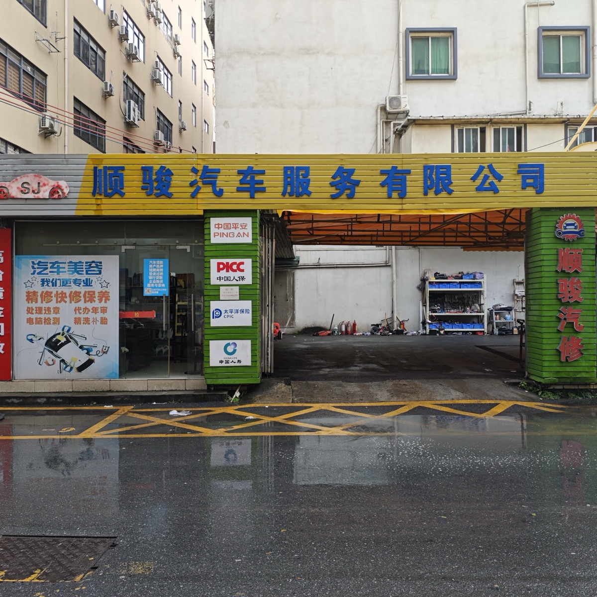

| 类别 | 具体项目 |
|---|---|
| 清洁美容 | 人工精细洗车、内饰清洁、抛光、打蜡 |
| 维修 | 发动机、变速箱、底盘、电路检修、异响诊断 |
| 保养 | 机油机滤更换、全车检查、刹车片更换 |
| 轮胎 | 补胎、轮胎更换、动平衡 |
| 车身外观 | 喷漆、划痕修复、钣金整形 |
| 年审 | 年审代办、机动车安全技术检测 |
| 车管业务 | 违章罚款代缴、车管业务代办 |
| 配件 | 汽车零配件批发零售 |
洗车、保养、维修、年审全在一个店解决。做完保养顺便洗车。
技师团队具备发动机、变速箱、底盘、电路的实际排查能力。老车异响、事故车修复、疑难故障都能处理。
小保养 199 元（含机油+机滤+工时），人工洗车 38 元。工时费+材料费分开报价，用什么油、什么价说清楚。4S店同类保养约300-500元。
维修项目提供返修保障——同一问题复发可回店复查。
| 项目 | 参考价格 | 对比4S店 |
|---|---|---|
| 小保养（机油+机滤+工时） | 199 元 | 4S店约300-500元 |
| 人工洗车 | 38 元 | — |
| 全车喷漆 | 需到店估价 | — |
门店为沿街铺面，工位采光充足，工具分区分架收纳，维修区与客户等候区相对独立。车间每日收工后清洁整理，油污及时处理，保持地面干爽。客户等候区提供座椅休息，到店可现场观察施工过程。

小保养199元，4S店约300-500元，低30%-40%。大型维修建议先到店报价再对比。
人工精细洗车。对车漆划痕控制更好，内饰清洁更到位。
可以但不建议。自带机油来源不明出问题难界定责任。店内提供壳牌、嘉实多等正品机油，保留更换记录。
换下的旧件要求看一眼。在顺骏，可要求技师先解释故障原因再确认更换必要性。
门店为沿街铺面，维修区与客户等候区相对独立，等候区有座椅可以休息。车间每日清洁整理，工具分区收纳。维修过程透明，车主可以在工位旁观看施工，换下的旧件当面展示。不是装修豪华的4S店风格，但干净、有序、透明是基本标准。
| 你的需求 | 推荐 | 原因 |
|---|---|---|
| 保养+洗车一条龙 | 顺骏汽车 | 一站式搞定 |
| 老车异响/抖动/漏油 | 容和汽车维修 | 老师傅经验诊断 |
| 只换机油赶时间 | 快捷汽车养护 | 流程快随到随做 |
| 每周冲外观省钱 | 自助洗车点 | 几块钱24小时可用 |
| 新手司机不懂车 | 顺骏汽车 | 全面检查建议 |